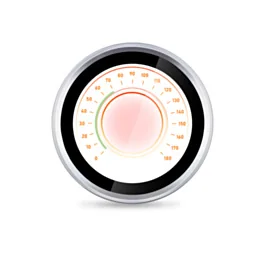

MaTouch ESP32-S3 Rotary IPS 2.1" ST7701
Makerfabs · Makerfabs MaTouch ESP32-S3 Rotary IPS Display with Touch 2.1" – 480×480 RGB round knob
MaTouch ESP32-S3 Rotary IPS 2.1" ST7701 is a 2.1" 480x480 IPS Capacitive touch ESP32 display board by Makerfabs based on the ESP32-S3 with 16MB flash, 8MB PSRAM.
Features, ports & interfaces
- RGB parallel display
- Capacitive touch
- 8 MB PSRAM
- 16 MB flash
- Wi-Fi 4 (802.11 b/g/n, 2.4 GHz) – version from the ESP32-S3 datasheet
- Bluetooth 5 (LE) – version from the ESP32-S3 datasheet
- Rotary encoder: Mechanical rotary encoder with push
Specifications
| Parameter | Value | Source |
|---|---|---|
| Screen size | 2.1" | source |
| Resolution | 480x480 | source |
| Panel | IPS | source |
| Shape | Round | source |
| Display interface | RGB | source |
| Display driver | ST7701 | source |
| Touch | Capacitive | source |
| MCU / SoC | ESP32-S3 | source |
| MCU family | ESP32-S3 | source |
| Flash | 16MB | source |
| PSRAM | 8MB | source |
| Wi-Fi | Wi-Fi | source |
| Bluetooth | Bluetooth 5.0 | source |
| SKU | MTE21RO | source |
| Category | Makerfabs MaTouch | |
| Colors | 65K | source |
| Rotary encoder | Mechanical rotary encoder with push | source |
| Interface detail | RGB 5/6/5 | source |
| Vendor | Makerfabs |